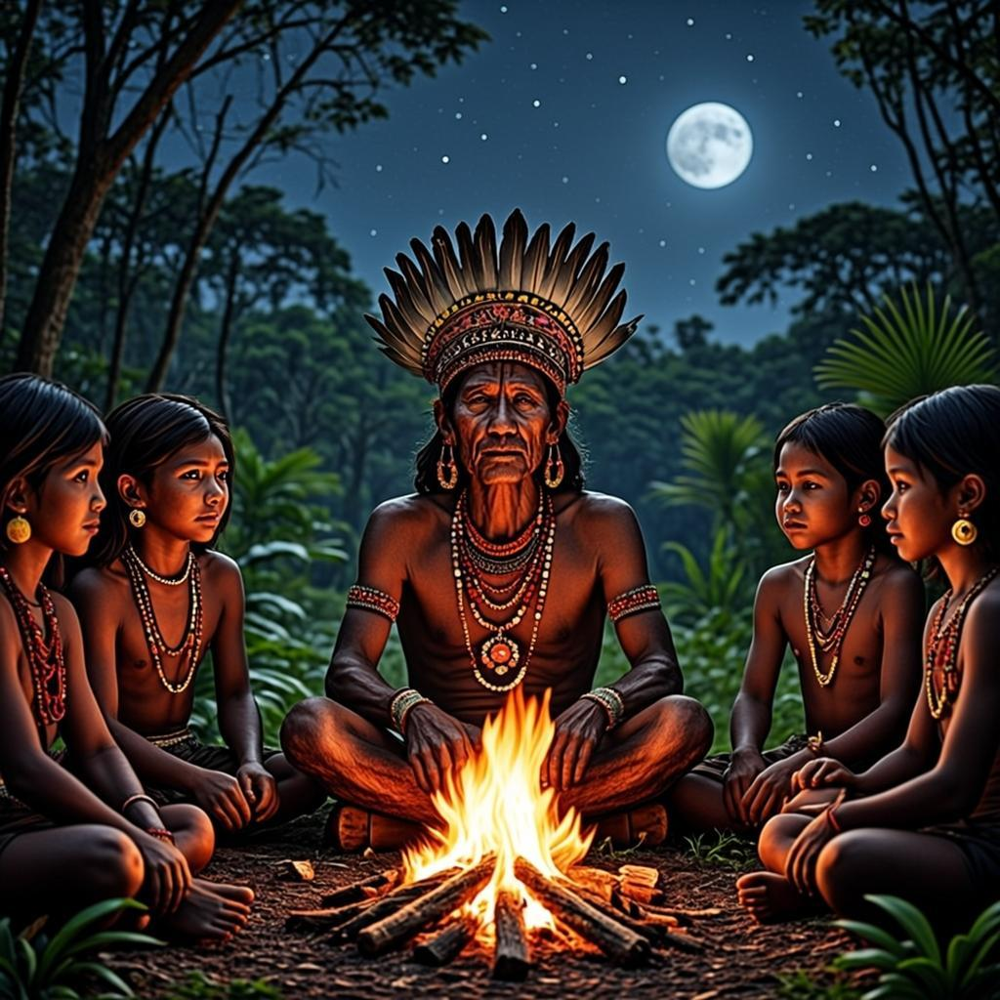
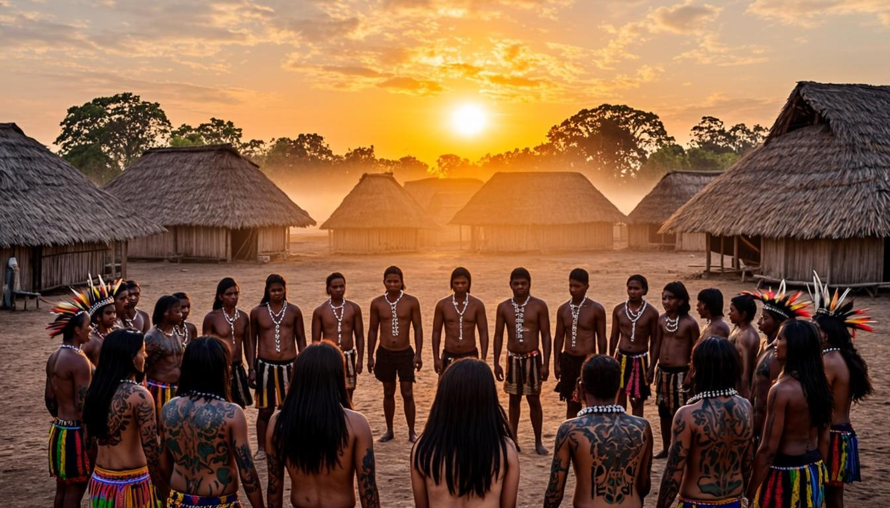

A fumaça da fogueira subia em espirais preguiçosas hacia o céu sem estrelas daquela noite de lua nova. Arariboia observava as chamas dançarem, enquanto ao seu redor os sons da taba se aquietavam. As crianças haviam sido recolhidas às ocas, as mulheres terminavam de preparar o cauin para a cerimônia do dia seguinte, e os guerreiros mais velhos fumavam seus cachimbos em silêncio, como convém aos que carregam o peso de muitas batalhas.
Aquela seria uma noite longa. Pela manhã, quando o sol nascesse sobre as águas calmas do grande rio, o prisioneiro Tupiniquim seria executado. Não por ódio — Arariboia sabia disso melhor que ninguém. Havia algo de sagrado naquele ato, algo que os velhos pajés tentavam explicar às novas gerações mas que só a experiência podia verdadeiramente ensinar.
O prisioneiro estava amarrado numa das ocas periféricas, guardado por dois jovens guerreiros que ainda não haviam participado de um ritual de antropofagia. Arariboia lembrava-se de como estivera no mesmo lugar, anos atrás, quando capturaram seu primeiro cativo numa incursão ao norte. A ansiedade, o medo, a excitação — tudo se misturava num caldo de emoções que nenhum guerreiro esquecia.
Guerreiro Tupinambá com pintura corporal de urucum e jenipapo
— Tu estás pensativo esta noite, irmão.
A voz de Pirajibe, o mais velho dos guerreiros presentes, interrompeu seus pensamentos. O homem se aproximou e sentou-se ao seu lado, estendendo uma cuia de cauin.
— Penso no prisioneiro — respondeu Arariboia, aceitando a bebida. — Luto contra ele há três luas, desde que o capturamos. Amanhã, enfim, poderei honrar meu tio morto.
— A vingança é o caminho — concordou Pirajibe, sua voz carregada da sabedoria de quem havia participado de dezenas de cerimônias. — Mas não esqueças que não é apenas vingança. Ao ingerirmos a carne do inimigo, absorvemos suas qualidades. Sua coragem, sua força, sua astúcia. Tudo isso passará a fazer parte de nós.
Arariboia pertencia ao povo Tupinambá, uma das muitas nações que compunham o vasto tronco linguístico Tupi. Seus parentes habitavam o litoral desde as terras do sul, onde o frio castigava no inverno, até as terras do norte, próximas ao grande rio que os estrangeiros um dia chamariam de Amazonas. Falavam línguas semelhantes, compartilhavam costumes afins, mas não se consideravam um único povo — muito menos amigos. Tupinambá e Tupiniquim, por exemplo, eram inimigos hereditários, e a guerra entre eles era constante e necessária.
Mas os Tupi não eram os únicos a habitar aquelas terras vastas. Arariboia sabia, pelas histórias dos mais velhos e pelas viagens que fizera em sua juventude, que outros povos viviam nas matas do interior. Os Kayapó, os Xavante, os Bororo — todos pertencentes ao tronco Jê, com línguas e costumes tão diferentes dos Tupi quanto o dia é diferente da noite. E mais ao norte, nas terras onde a floresta era tão densa que o sol mal penetrava, viviam os povos dos troncos Aruak e Karib, sobre quem Arariboia só conhecia lendas e rumores.
— Meu pai costumava dizer — comentou Arariboia, puxando a memória — que antes de nós, outros povos já habitavam estas terras. Milhares de luas antes de nossos avós nascerem.
— É verdade — confirmou Pirajibe. — Os mais velhos dizem que somos como as árvores: cada um com suas raízes, mas todos brotando da mesma terra. Cada povo com sua língua, seus costumes, suas terras. Não somos todos iguais, como alguns jovens pensam. Somos diferentes, e essa diferença nos fortalece.
Mata Atlântica ao amanhecer, habitat dos povos indígenas
A noite avançava, e a taba começava a dormir. Arariboia levantou-se e caminhou em direção à oca central, onde o pajé Itamaraca preparava os instrumentos rituais para a cerimônia do dia seguinte. O ancião ergueu os olhos quando o guerreiro entrou, e um sorriso sereno iluminou seu rosto marcado pelo tempo.
— Eu te esperava, jovem guerreiro. Senta-te.
A oca do pajé cheirava a ervas secas e fumaça de tabaco. Nas paredes, máscaras de madeira e penas coloridas pendiam, cada uma contando uma história, cada uma carregando o espírito de um ancestral. Arariboia sentou-se no chão de terra batida, cruzando as pernas.
— Tenho dúvidas, pajé — disse o guerreiro, baixando a voz. — O prisioneiro... ele parece tão jovem. Mal deve ter visto quinze luas de vida.
— A idade do corpo não importa — respondeu Itamaraca, preparando um cachimbo. — O que importa é o espírito. Amanhã, quando o executarmos, seu espírito passará a viver em nós. Não o estaremos matando, mas o incorporando.
O pajé, guardião da sabedoria e das tradições ancestrais
O pajé acendeu o cachimbo e aspirou profundamente antes de continuar:
— Tu sabes por que fazemos isso, Arariboia?
— Para vingar meu tio morto.
— Em parte. Mas há mais. Quando um parente morre, uma parte de nós morre junto. A tristeza nos consome, nos enfraquece. A vingança é o caminho para restaurar o equilíbrio. E ao comer a carne do inimigo, absorvemos suas qualidades — sua força, sua coragem, sua habilidade guerreira. É um ato de incorporação, não de destruição.
Organização Social dos Povos Indígenas
- As aldeias, chamadas tabas, variavam grandemente em tamanho — algumas abrigavam poucas famílias, outras chegavam a milhares de pessoas
- O parentesco era a base de toda organização social; quem era da família determinava direitos, obrigações e status
- Entre os Tupi, a estrutura era matrilinear — as crianças pertenciam ao clã da mãe, não do pai
- A religiosidade era animista — acreditava-se que todas as coisas possuíam espírito
- Os pajés eram os intermediários entre o mundo dos vivos e o mundo dos espíritos
Arariboia deixou a oca do pajé com a mente mais leve. A noite estava fresca, e uma brisa suave vinha do mar, trazendo consigo o cheiro de sal e maresia. Ele caminhou até a beira da taba, onde a mata começava, e olhou para as árvores que cercavam a aldeia.
Aquelas terras haviam sido de seus ancestrais por gerações inumeráveis. Seu povo conhecia cada árvore, cada rio, cada clareira. Sabiam quando plantar a mandioca, quando colher o milho, quando caçar e quando pescar. A agricultura de coivara — que consistia em derrubar e queimar uma área de mata para depois cultivá-la — era a base de sua economia, complementada pela caça, pesca e coleta de frutos silvestres.
Naquela noite, porém, algo perturbava Arariboia. Não era medo do ritual — ele já participara de outros antes. Era algo mais profundo, uma inquietação que ele não conseguia nomear. Como se o mundo estivesse prestes a mudar de maneiras que ele não podia imaginar.
— Não consegue dormir?
A voz veio das sombras. Era Irama, a filha mais velha do cacique, uma mulher que Arariboia conhecera desde a infância. Ela se aproximou, carregando uma pequena cesta com ervas medicinais.
— Amanhã é um dia importante — disse ele, sem olhá-la. — Depois de amanhã, serei um guerreiro completo.
— És um guerreiro completo há muito tempo, Arariboia. O ritual apenas confirmará o que todos já sabemos.
Ela se sentou ao seu lado, e por um momento ficaram em silêncio, observando as estrelas que começavam a surgir entre as nuvens.
— Meu pai disse que te viu lutando contra o prisioneiro — disse Irama, finalmente. — Disse que ele é um guerreiro valente, apesar de jovem.
— É. Lutou como um demônio. Levou três de nós para derrubá-lo.
— E ainda assim o capturastes. Isso demonstra tua força.
Arariboia suspirou. Havia algo que ele não havia contado a ninguém — algo que o perturbava profundamente. Durante a luta, quando finalmente conseguira imobilizar o prisioneiro, olhara nos olhos do jovem Tupiniquim. E o que vira ali não era ódio, nem medo, nem desespero. Era reconhecimento. Como se o inimigo o conhecesse de algum lugar, de algum tempo que Arariboia não conseguia lembrar.
A madrugada chegou silenciosa. Arariboia não havia dormido, mas não se sentia cansado. Quando os primeiros raios de sol pintaram o céu de rosa e dourado, ele já estava pronto — corpo pintado de urucum e jenipapo, adornado com penas de arara e tucano, portando a clava que herdara de seu pai.
A cerimônia ao amanhecer, momento de transformação e honra
A taba inteira se reuniu no centro da aldeia. As mulheres formavam um círculo ao redor da arena, cantando e dançando. As crianças observavam de longe, protegidas pelos mais velhos, que aproveitavam para ensinar os significados de cada parte do ritual. Os guerreiros, pintados e armados, esperavam em silêncio.
O prisioneiro foi trazido para o centro da arena. Mesmo amarrado, mantinha a postura ereta e o olhar firme. Arariboia aproximou-se dele, clava em punho, e por um momento seus olhares se cruzaram novamente.
Não houve palavras. Não haveria como se entenderem — falavam línguas diferentes, pertenciam a povos inimigos, haviam nascido para se odiar. Mas naquele instante final, Arariboia compreendeu algo que nenhum pajé jamais lhe ensinara: aquele jovem guerreiro, que ele estava prestes a matar, era exatamente como ele. Mesma idade, mesma coragem, mesmo amor por seu povo, mesma certeza de estar do lado certo.
O golpe foi rápido. O corpo do prisioneiro caiu sem um gemido. E quando Arariboia ergueu os olhos, viu que o céu continuava azul, as árvores continuavam verdes, e a vida na taba seguia seu curso — como sempre seguira, como sempre seguiria.
Anos mais tarde, Arariboia ainda contaria aquela história aos netos, nas noites frias de inverno. Contaria sobre seu povo, os Tupinambá, sobre as guerras intertribais que tinham múltiplos significados: captura de prisioneiros, vingança, demonstração de valor guerreiro. Contaria sobre os povos do litoral, do interior, do norte — todos diferentes, todos filhos da mesma terra.
Mas o que nunca contaria — o que guardaria apenas para si — era o olhar daquele jovem Tupiniquim nos últimos instantes de vida. Um olhar que dizia: "Eu te entendo. Tu és eu, e eu sou tu. E nenhum de nós está errado."
Aquelas terras, que um dia seriam chamadas de Brasil, continuariam a testemunhar histórias como aquela por séculos. Histórias de povos que aqui viviam muito antes de qualquer europeu pisar estas praias. Povos que tinham suas próprias línguas, suas próprias religiões, seus próprios modos de compreender o mundo. Povos que, apesar de tudo o que viria a acontecer, jamais seriam completamente esquecidos.